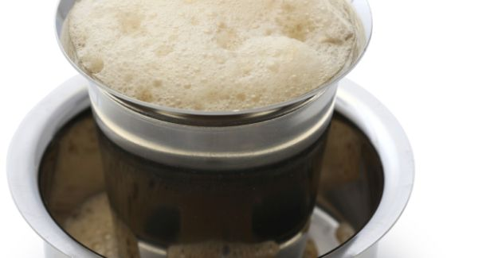

10 Local Dishes You Must Try in Chennai
Filter Coffee
Melbournians
might assume that they are the world's ultimate coffee snobs, but they
probably haven't met Chennai's filter coffee snobs who obsess with
every ingredient that goes into making the brew that fuels the city.
From the early risers (the city is full of them) who grab their tumbler
(not cuppah) before sunrise at Saravana Bhavan on RK Salai to the
tumblers of coffee that are served at tiffin time in true-blue Mylapore
establishments like Karpagamabal Mess and Mami Mess, almost every
corner of the city boasts of top quality (some TamBrams still say
A-one) coffee. Freshly brewed decoction comes together with high fat
milk in a tumbler that overflows with froth and a brew that is almost
guaranteed to coat your tongue.

Mulligatawny Soup
Madras
is where the British empire in India took wings and the British
influence on the city foodscape is still evident in the city's 19th
century gentleman's clubs. The British didn't just reinvent the South
Indian rasam but also borrowed the Tamil word - milagu thani (pepper
water) and anglicised it. This soup combines traditional ingredients
like grated coconut with British tweaks like apple, carrot and chicken,
and is usually served with a few morsels of rice. You can still find an
authentic version at clubs like Gymkhana and Madras Club.
Sundal
The
Marina beach - one of the world's longest urban beaches, is almost an
integral part of the city's identity. It's also the best place to
sample sundal - usually boiled white channa (it's common to find black
channa and green peas versions too) tossed with mustard seeds, grated
coconut, raw mango and curry leaves. The sundal is also a traditional
snack served during the 10 days of Dusherra and an equally popular
barsnack in some of the city's clubs and bars.
Nethili Fry
Chennai'sfishing
community can claim to be one of the city's earliest inhabitants. The
city is a treasure trove for seafood with fresh catch of the day easily
available for homes and restaurants alike (which is why it puzzles me
why many restaurants choose to use basa). One of the city's
quintessential seafood dishes is Nethili fry - fried anchovies tossed
in a spicy masala(most restaurants coat the anchovies in a spicy '65'
masala) - crunchy and scrumptious.

Masala Dosai
It
was Udupi restaurateurs like Dasaprakash and Woodlands who probably
brought this dish to Chennai. You can try their ghee soaked, crispy
version in restaurants like Krishna (Woodlands) or Mathsya or have an
improvised Chennai version - the 'caloricious' GheeMasala Roast at
Saravana Bhavan, which is a meal in itself. Some restaurants also serve
the Mysore Masala Dosa slathered with the trademark paste.
Biryani
The
city might not have its own version of biryani, but there are at least
two towns in Tamil Nadu - Ambur and Dindigul, with world-famous
biryanis. The Dindigul version cooked with the small grain Seeraga
Samba rice is trending in Chennai but it's the Ambur version cooked at
Muslim weddings that is still the gold standard. Chennai's iconic
Buhari Hotel might be better known outside the city for inventing
Chicken 65 but it's thebiryani that rules the roost here.
Murukku Sandwich
The
Sowcarpet area has been home to the city's Marwari community for
decades and spawned a unique foodculture. While this is easily
Chennai's best neighbourhood for chaats, it's also home to one of the
city's most innovative street-food dishes. This snack takes the
Bombay-style sandwich and compresses it into a bite-sized dish - the
bread slices make way for murukkus (chaklis); it's crunchy and
finger-licking good.
Mysore Pak
Chennai
sells way more Mysore Pak than Mysuru; it's the one thing most people
will ask you to carry back from the city. This melt-in-your-mouth sweet
is crafted with just three ingredients - sugar, ghee and Bengal gram.
The Mysore Pak fans in the city are divided into two camps - those who
like the softer 'Mysurpa' version that was made popular by Shri Krishna
Sweets and the slightly coarse yet crumbly Mysore Pak that tastes best
at Grand Sweets. Try both and then take sides.
Full Meals
No
visit to Chennai is complete without rolling your sleeves and going the
whole hog (literally) with a larger than life banana leaf meal. There's
the all-vegetarian version - you could try the traditional Tamil Nadu
meals or Andhra Meals (at restaurants like National Lodge) or even a
Kerala Sadhya or head to one of the city's Military hotels (Like Velu
Military hotel) or restaurants like Junior Kupanna where an array of
meat gravies complement standard fare like sambarandrasam.
Atho
Chennai's
Burmese connection - a large number of Tamils left Burma in the early
1960s, is most evident in North Chennai where quite a few
hole-in-the-wall establishments (there's even one that calls itself
Atho Shop) serve delicious Burmese street food. This includes the fiery
Atho - fried noodles tossed with cabbage,onion and tamarind juice. If
you can't make the trek to Burma Colony, there's Ma Tint Tint in the
heart of the city.